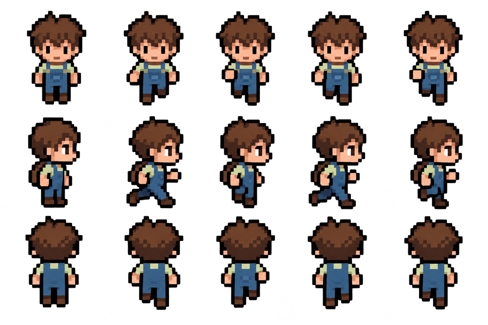
남자아이characters/child-boy-atlas-v18.png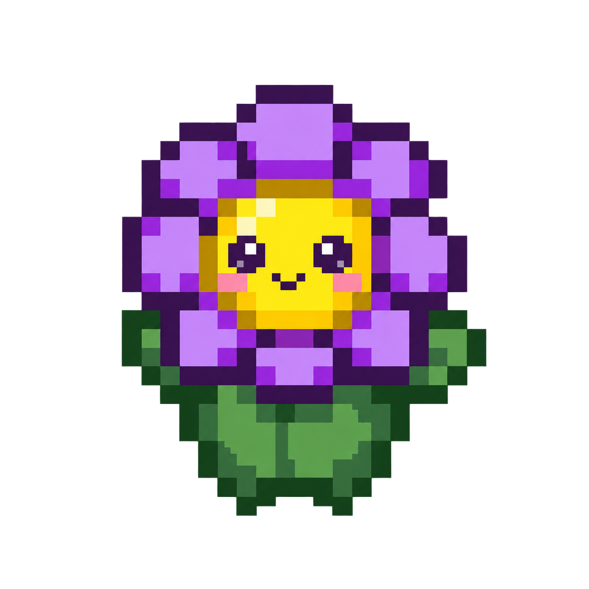
해국정면 · 도감 / 상대 / 필드 · 1254×1254assets/monsters/001.png해국 · 게임용 창작 그림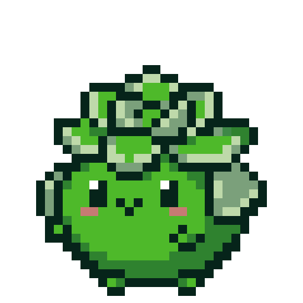
땅채송화도감 · 전투 · 필드 (정면 그림 하나) · 512×512assets/monsters/002.png땅채송화 · 게임용 창작 그림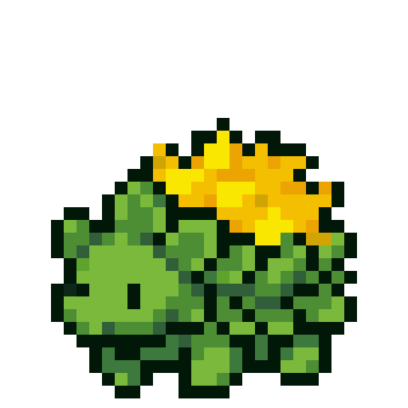
섬기린초도감 · 전투 · 필드 (정면 그림 하나) · 512×512assets/monsters/003.png섬기린초 · 게임용 창작 그림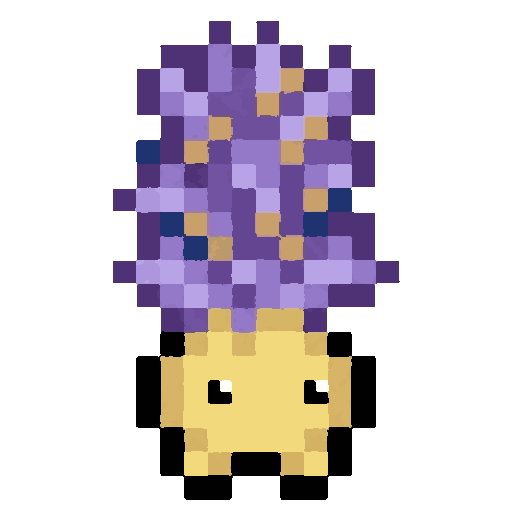
초종용도감 · 전투 · 필드 (정면 그림 하나) · 512×512assets/monsters/004.png초종용 · 게임용 창작 그림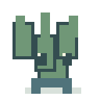
도깨비고비도감 · 전투 · 필드 (정면 그림 하나) · 512×512assets/monsters/005.png도깨비고비 · 게임용 창작 그림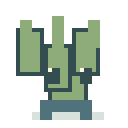
번행초도감 · 전투 · 필드 (정면 그림 하나) · 512×512assets/monsters/006.png번행초 · 게임용 창작 그림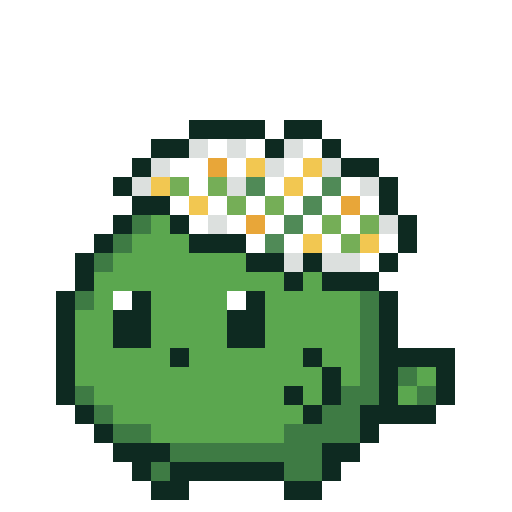
갯까치수염도감 · 전투 · 필드 (정면 그림 하나) · 512×512assets/monsters/008.png갯까치수염 · 게임용 창작 그림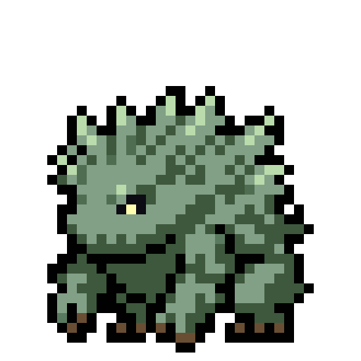
갯제비쑥도감 · 전투 · 필드 (정면 그림 하나) · 512×512assets/monsters/009.png갯제비쑥 · 게임용 창작 그림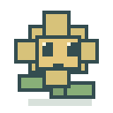
술패랭이꽃도감 · 전투 · 필드 (정면 그림 하나) · 512×512assets/monsters/010.png술패랭이꽃 · 게임용 창작 그림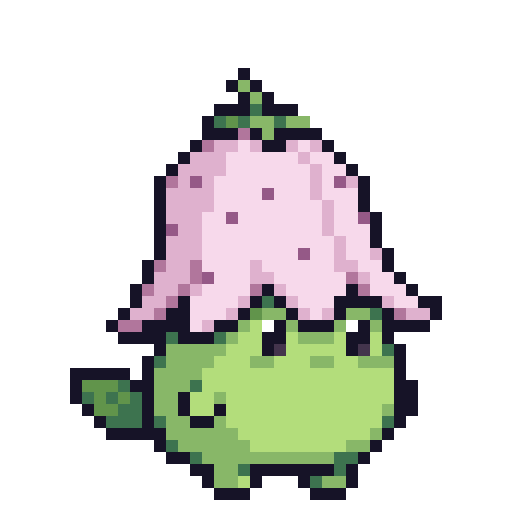
섬초롱꽃도감 · 전투 · 필드 (정면 그림 하나) · 512×512assets/monsters/011.png섬초롱꽃 · 게임용 창작 그림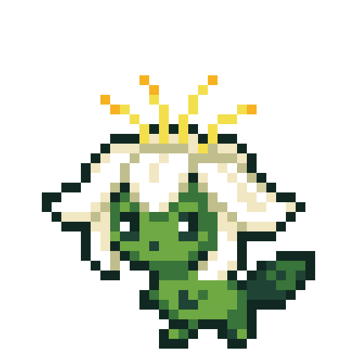
섬괴불나무도감 · 전투 · 필드 (정면 그림 하나) · 512×512assets/monsters/012.png섬괴불나무 · 게임용 창작 그림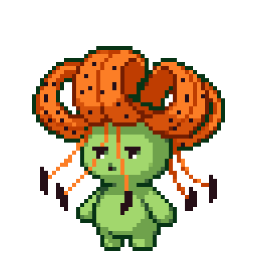
참나리도감 · 전투 · 필드 (정면 그림 하나) · 512×512assets/monsters/013.png참나리 · 게임용 창작 그림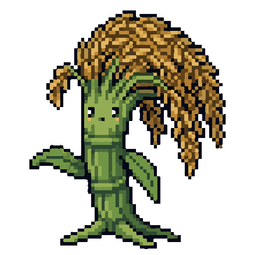
왕김의털도감 · 전투 · 필드 (정면 그림 하나) · 512×512assets/monsters/014.png왕김의털 · 게임용 창작 그림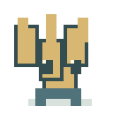
개밀도감 · 전투 · 필드 (정면 그림 하나) · 512×512assets/monsters/015.png개밀 · 게임용 창작 그림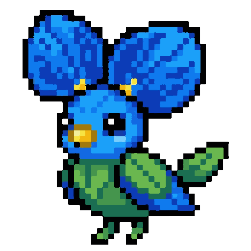
닭의장풀도감 · 전투 · 필드 (정면 그림 하나) · 512×512assets/monsters/016.png닭의장풀 · 게임용 창작 그림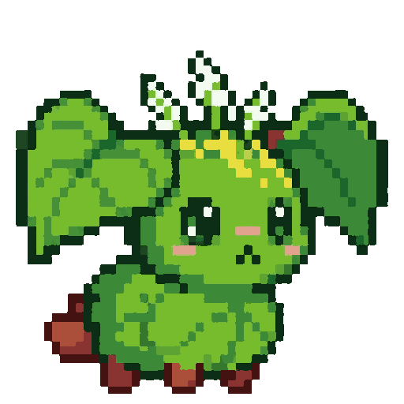
왕호장근도감 · 전투 · 필드 (정면 그림 하나) · 512×512assets/monsters/017.png왕호장근 · 게임용 창작 그림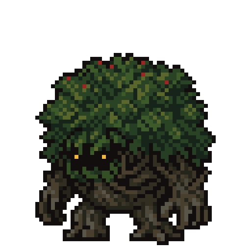
사철나무도감 · 전투 · 필드 (정면 그림 하나) · 512×512assets/monsters/018.png사철나무 · 게임용 창작 그림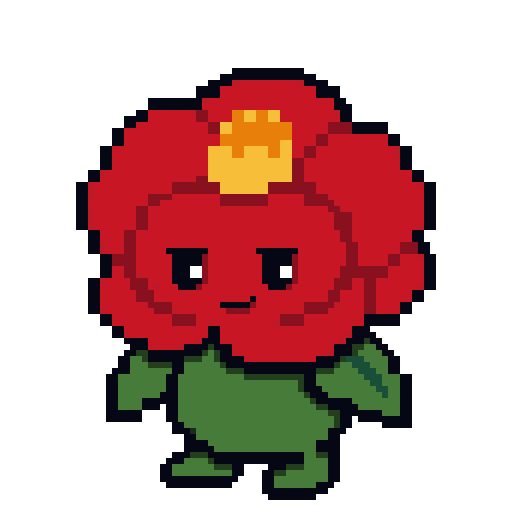
동백나무도감 · 전투 · 필드 (정면 그림 하나) · 512×512assets/monsters/019.png동백나무 · 게임용 창작 그림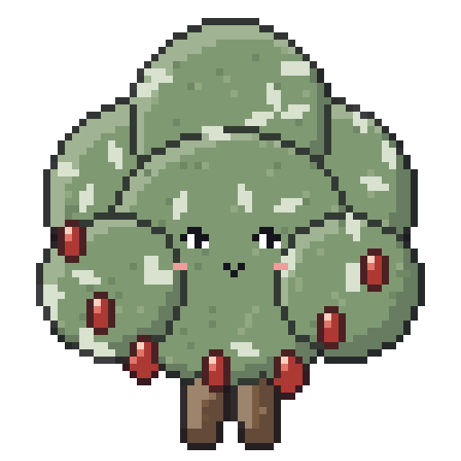
보리밥나무도감 · 전투 · 필드 (정면 그림 하나) · 512×512assets/monsters/020.png보리밥나무 · 게임용 창작 그림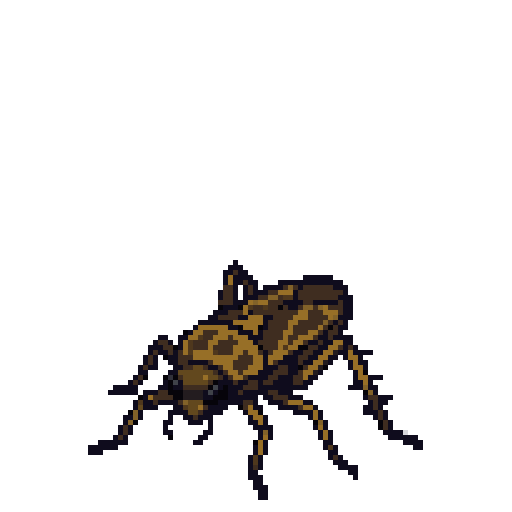
독도장님노린재도감 · 전투 · 필드 (정면 그림 하나) · 512×512assets/monsters/021.png독도장님노린재 · 게임용 창작 그림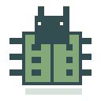
애꽃노린재도감 · 전투 · 필드 (정면 그림 하나) · 512×512assets/monsters/022.png애꽃노린재 · 게임용 창작 그림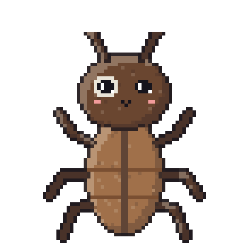
애긴노린재도감 · 전투 · 필드 (정면 그림 하나) · 512×512assets/monsters/023.png애긴노린재 · 게임용 창작 그림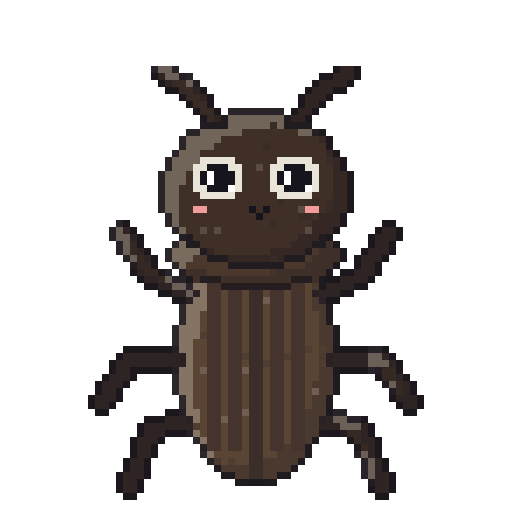
된장잠자리도감 · 전투 · 필드 (정면 그림 하나) · 512×512assets/monsters/024.png된장잠자리 · 게임용 창작 그림 풀색노린재도감 · 전투 · 필드 (정면 그림 하나) · 512×512assets/monsters/025.png풀색노린재 · 게임용 창작 그림
풀색노린재도감 · 전투 · 필드 (정면 그림 하나) · 512×512assets/monsters/025.png풀색노린재 · 게임용 창작 그림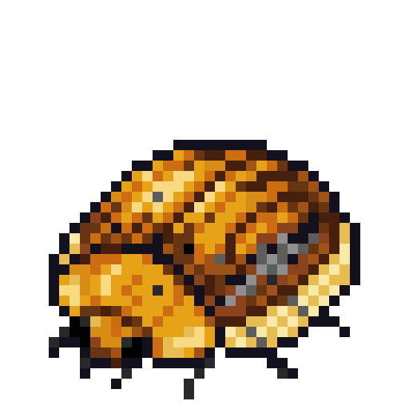
남생이잎벌레도감 · 전투 · 필드 (정면 그림 하나) · 512×512assets/monsters/026.png남생이잎벌레 · 게임용 창작 그림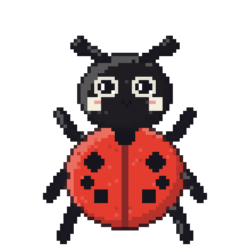
칠성무당벌레도감 · 전투 · 필드 (정면 그림 하나) · 512×512assets/monsters/027.png칠성무당벌레 · 게임용 창작 그림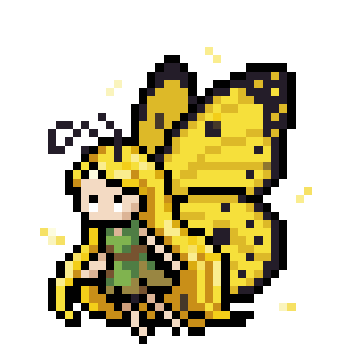
노랑나비도감 · 전투 · 필드 (정면 그림 하나) · 512×512assets/monsters/028.png노랑나비 · 게임용 창작 그림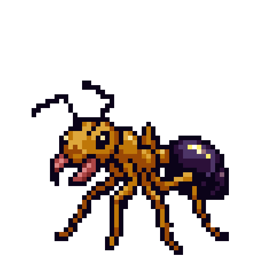
배검은꼬마개미도감 · 전투 · 필드 (정면 그림 하나) · 512×512assets/monsters/029.png배검은꼬마개미 · 게임용 창작 그림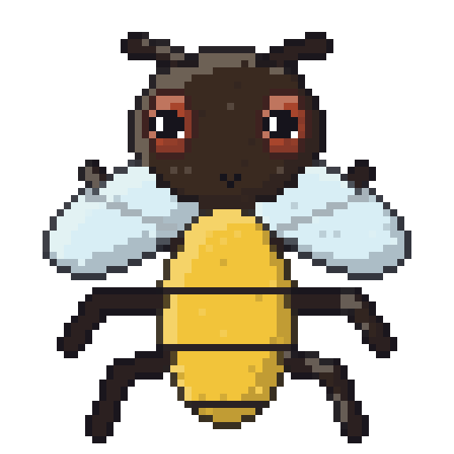
쟈바꽃등에도감 · 전투 · 필드 (정면 그림 하나) · 512×512assets/monsters/030.png쟈바꽃등에 · 게임용 창작 그림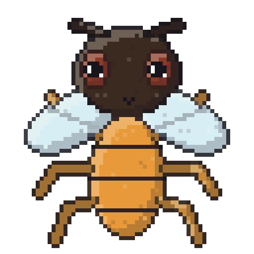
호리꽃등에도감 · 전투 · 필드 (정면 그림 하나) · 512×512assets/monsters/031.png호리꽃등에 · 게임용 창작 그림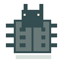
명아주나무이도감 · 전투 · 필드 (정면 그림 하나) · 512×512assets/monsters/032.png명아주나무이 · 게임용 창작 그림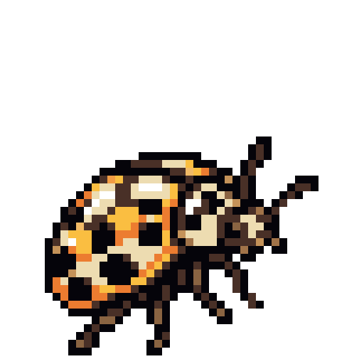
꼬마남생이무당벌레도감 · 전투 · 필드 (정면 그림 하나) · 512×512assets/monsters/033.png꼬마남생이무당벌레 · 게임용 창작 그림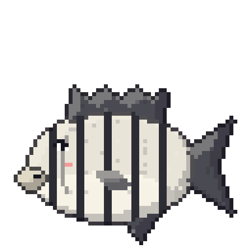
돌돔도감 · 전투 · 필드 (정면 그림 하나) · 512×512assets/monsters/034.png돌돔 · 게임용 창작 그림 자리돔도감 · 전투 · 필드 (정면 그림 하나) · 512×512assets/monsters/035.png자리돔 · 게임용 창작 그림
자리돔도감 · 전투 · 필드 (정면 그림 하나) · 512×512assets/monsters/035.png자리돔 · 게임용 창작 그림 벵에돔도감 · 전투 · 필드 (정면 그림 하나) · 512×512assets/monsters/036.png벵에돔 · 게임용 창작 그림
벵에돔도감 · 전투 · 필드 (정면 그림 하나) · 512×512assets/monsters/036.png벵에돔 · 게임용 창작 그림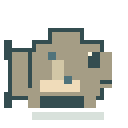
볼락도감 · 전투 · 필드 (정면 그림 하나) · 512×512assets/monsters/037.png볼락 · 게임용 창작 그림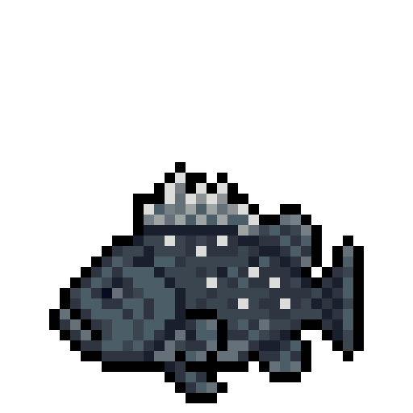
조피볼락도감 · 전투 · 필드 (정면 그림 하나) · 512×512assets/monsters/038.png조피볼락 · 게임용 창작 그림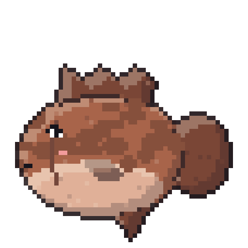
개볼락도감 · 전투 · 필드 (정면 그림 하나) · 512×512assets/monsters/039.png개볼락 · 게임용 창작 그림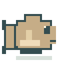
넙치도감 · 전투 · 필드 (정면 그림 하나) · 512×512assets/monsters/040.png넙치 · 게임용 창작 그림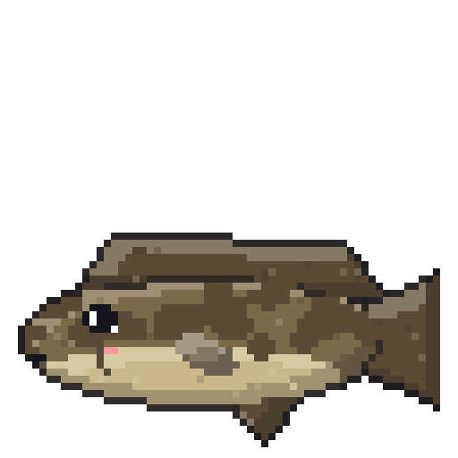
노래미도감 · 전투 · 필드 (정면 그림 하나) · 512×512assets/monsters/041.png노래미 · 게임용 창작 그림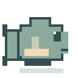
놀래기도감 · 전투 · 필드 (정면 그림 하나) · 512×512assets/monsters/042.png놀래기 · 게임용 창작 그림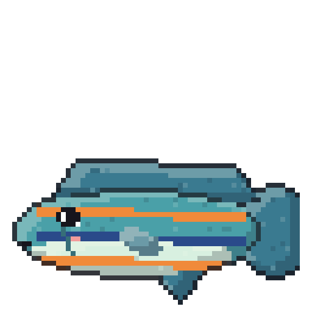
용치놀래기도감 · 전투 · 필드 (정면 그림 하나) · 512×512assets/monsters/043.png용치놀래기 · 게임용 창작 그림 범돔도감 · 전투 · 필드 (정면 그림 하나) · 512×512assets/monsters/044.png범돔 · 게임용 창작 그림
범돔도감 · 전투 · 필드 (정면 그림 하나) · 512×512assets/monsters/044.png범돔 · 게임용 창작 그림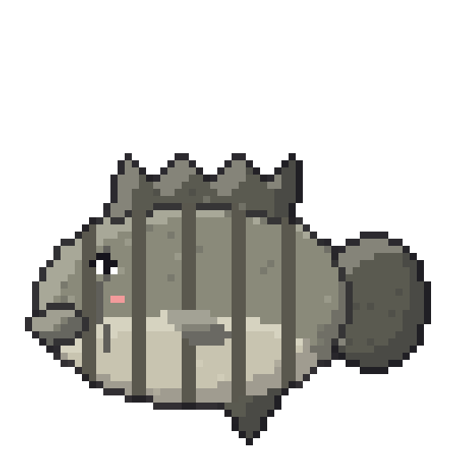
능성어도감 · 전투 · 필드 (정면 그림 하나) · 512×512assets/monsters/045.png능성어 · 게임용 창작 그림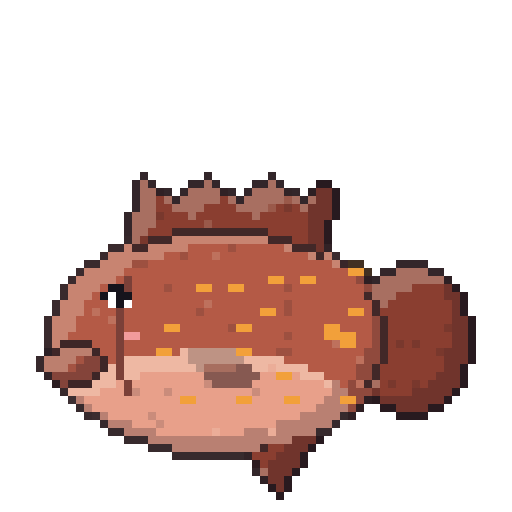
붉바리도감 · 전투 · 필드 (정면 그림 하나) · 512×512assets/monsters/046.png붉바리 · 게임용 창작 그림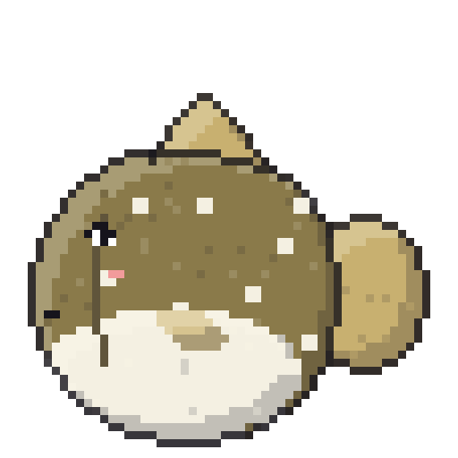
복섬도감 · 전투 · 필드 (정면 그림 하나) · 512×512assets/monsters/047.png복섬 · 게임용 창작 그림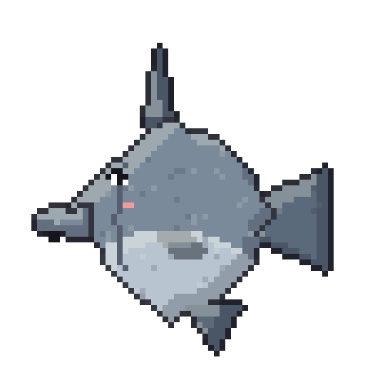
말쥐치도감 · 전투 · 필드 (정면 그림 하나) · 512×512assets/monsters/048.png말쥐치 · 게임용 창작 그림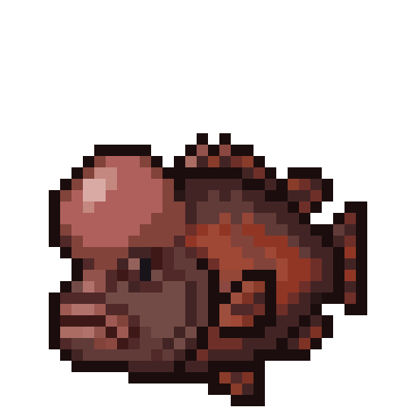
혹돔도감 · 전투 · 필드 (정면 그림 하나) · 512×512assets/monsters/049.png혹돔 · 게임용 창작 그림 돌기해삼도감 · 전투 · 필드 (정면 그림 하나) · 512×512assets/monsters/057.png돌기해삼 · 게임용 창작 그림
돌기해삼도감 · 전투 · 필드 (정면 그림 하나) · 512×512assets/monsters/057.png돌기해삼 · 게임용 창작 그림 보라성게도감 · 전투 · 필드 (정면 그림 하나) · 512×512assets/monsters/059.png보라성게 · 게임용 창작 그림
보라성게도감 · 전투 · 필드 (정면 그림 하나) · 512×512assets/monsters/059.png보라성게 · 게임용 창작 그림 고니도감 · 전투 · 필드 (정면 그림 하나) · 512×512assets/monsters/075.png고니 · 게임용 창작 그림
고니도감 · 전투 · 필드 (정면 그림 하나) · 512×512assets/monsters/075.png고니 · 게임용 창작 그림 검은가슴물떼새도감 · 전투 · 필드 (정면 그림 하나) · 512×512assets/monsters/083.png검은가슴물떼새 · 게임용 창작 그림
검은가슴물떼새도감 · 전투 · 필드 (정면 그림 하나) · 512×512assets/monsters/083.png검은가슴물떼새 · 게임용 창작 그림 박새도감 · 전투 · 필드 (정면 그림 하나) · 512×512assets/monsters/091.png박새 · 게임용 창작 그림
박새도감 · 전투 · 필드 (정면 그림 하나) · 512×512assets/monsters/091.png박새 · 게임용 창작 그림 주인공down · 걷기 1 · 64×64assets/player/down-1.png투명 정사각형. 발은 아래쪽에 맞춰요.
주인공down · 걷기 1 · 64×64assets/player/down-1.png투명 정사각형. 발은 아래쪽에 맞춰요. 주인공up · 걷기 0 · 64×64assets/player/up-0.png투명 정사각형. 발은 아래쪽에 맞춰요.
주인공up · 걷기 0 · 64×64assets/player/up-0.png투명 정사각형. 발은 아래쪽에 맞춰요. 주인공right · 걷기 1 · 64×64assets/player/right-1.png투명 정사각형. 발은 아래쪽에 맞춰요.
주인공right · 걷기 1 · 64×64assets/player/right-1.png투명 정사각형. 발은 아래쪽에 맞춰요. 한여울 박사1지역 NPC · 64×64assets/npc/01/01.pngnormal
한여울 박사1지역 NPC · 64×64assets/npc/01/01.pngnormal 나루1지역 NPC · 64×64assets/npc/01/02.pngnormal
나루1지역 NPC · 64×64assets/npc/01/02.pngnormal 관장 해온1지역 NPC · 64×64assets/npc/01/05.pngnormal
관장 해온1지역 NPC · 64×64assets/npc/01/05.pngnormal 쉼터지기1지역 NPC · 64×64assets/npc/01/06.pngnormal
쉼터지기1지역 NPC · 64×64assets/npc/01/06.pngnormal 모래 선장1지역 NPC · 64×64assets/npc/01/07.pngnormal
모래 선장1지역 NPC · 64×64assets/npc/01/07.pngnormal 이사부의 기억2지역 NPC · 64×64assets/npc/02/01.pnghistory
이사부의 기억2지역 NPC · 64×64assets/npc/02/01.pnghistory 나루2지역 NPC · 64×64assets/npc/02/02.pngnormal
나루2지역 NPC · 64×64assets/npc/02/02.pngnormal 백무단 지도 수집원2지역 NPC · 64×64assets/npc/02/04.pngenemy
백무단 지도 수집원2지역 NPC · 64×64assets/npc/02/04.pngenemy 관장 소라2지역 NPC · 64×64assets/npc/02/05.pngnormal
관장 소라2지역 NPC · 64×64assets/npc/02/05.pngnormal 모래 선장2지역 NPC · 64×64assets/npc/02/07.pngnormal
모래 선장2지역 NPC · 64×64assets/npc/02/07.pngnormal 연구 안내원2지역 NPC · 64×64assets/npc/02/08.pngnormal
연구 안내원2지역 NPC · 64×64assets/npc/02/08.pngnormal 이규원의 기억3지역 NPC · 64×64assets/npc/03/01.pnghistory
이규원의 기억3지역 NPC · 64×64assets/npc/03/01.pnghistory 나루3지역 NPC · 64×64assets/npc/03/02.pngnormal
나루3지역 NPC · 64×64assets/npc/03/02.pngnormal 백무단 조사원3지역 NPC · 64×64assets/npc/03/04.pngenemy
백무단 조사원3지역 NPC · 64×64assets/npc/03/04.pngenemy 관장 단우3지역 NPC · 64×64assets/npc/03/05.pngnormal
관장 단우3지역 NPC · 64×64assets/npc/03/05.pngnormal 쉼터지기3지역 NPC · 64×64assets/npc/03/06.pngnormal
쉼터지기3지역 NPC · 64×64assets/npc/03/06.pngnormal 모래 선장3지역 NPC · 64×64assets/npc/03/07.pngnormal
모래 선장3지역 NPC · 64×64assets/npc/03/07.pngnormal 연구 안내원3지역 NPC · 64×64assets/npc/03/08.pngnormal
연구 안내원3지역 NPC · 64×64assets/npc/03/08.pngnormal 안용복의 기억4지역 NPC · 64×64assets/npc/04/01.pnghistory
안용복의 기억4지역 NPC · 64×64assets/npc/04/01.pnghistory 나루4지역 NPC · 64×64assets/npc/04/02.pngnormal
나루4지역 NPC · 64×64assets/npc/04/02.pngnormal 간부 먹선4지역 NPC · 64×64assets/npc/04/04.pngenemy
간부 먹선4지역 NPC · 64×64assets/npc/04/04.pngenemy 관장 윤서4지역 NPC · 64×64assets/npc/04/05.pngnormal
관장 윤서4지역 NPC · 64×64assets/npc/04/05.pngnormal 쉼터지기4지역 NPC · 64×64assets/npc/04/06.pngnormal
쉼터지기4지역 NPC · 64×64assets/npc/04/06.pngnormal 모래 선장4지역 NPC · 64×64assets/npc/04/07.pngnormal
모래 선장4지역 NPC · 64×64assets/npc/04/07.pngnormal 연구 안내원4지역 NPC · 64×64assets/npc/04/08.pngnormal
연구 안내원4지역 NPC · 64×64assets/npc/04/08.pngnormal 서하5지역 NPC · 64×64assets/npc/05/01.pnghistory
서하5지역 NPC · 64×64assets/npc/05/01.pnghistory 간부 쇄도5지역 NPC · 64×64assets/npc/05/04.pngenemy
간부 쇄도5지역 NPC · 64×64assets/npc/05/04.pngenemy 관장 초림5지역 NPC · 64×64assets/npc/05/05.pngnormal
관장 초림5지역 NPC · 64×64assets/npc/05/05.pngnormal 쉼터지기5지역 NPC · 64×64assets/npc/05/06.pngnormal
쉼터지기5지역 NPC · 64×64assets/npc/05/06.pngnormal 연구 안내원5지역 NPC · 64×64assets/npc/05/08.pngnormal
연구 안내원5지역 NPC · 64×64assets/npc/05/08.pngnormal 심흥택의 기억6지역 NPC · 64×64assets/npc/06/01.pnghistory
심흥택의 기억6지역 NPC · 64×64assets/npc/06/01.pnghistory 나루6지역 NPC · 64×64assets/npc/06/02.pngnormal
나루6지역 NPC · 64×64assets/npc/06/02.pngnormal 백무단 기록 관리자6지역 NPC · 64×64assets/npc/06/04.pngenemy
백무단 기록 관리자6지역 NPC · 64×64assets/npc/06/04.pngenemy 관장 시온6지역 NPC · 64×64assets/npc/06/05.pngnormal
관장 시온6지역 NPC · 64×64assets/npc/06/05.pngnormal 쉼터지기6지역 NPC · 64×64assets/npc/06/06.pngnormal
쉼터지기6지역 NPC · 64×64assets/npc/06/06.pngnormal 모래 선장6지역 NPC · 64×64assets/npc/06/07.pngnormal
모래 선장6지역 NPC · 64×64assets/npc/06/07.pngnormal 연구 안내원6지역 NPC · 64×64assets/npc/06/08.pngnormal
연구 안내원6지역 NPC · 64×64assets/npc/06/08.pngnormal 고종의 기억6지역 NPC · 64×64assets/npc/06/09.pnghistory
고종의 기억6지역 NPC · 64×64assets/npc/06/09.pnghistory 이명래의 기억6지역 NPC · 64×64assets/npc/06/10.pnghistory
이명래의 기억6지역 NPC · 64×64assets/npc/06/10.pnghistory 홍순칠의 기억7지역 NPC · 64×64assets/npc/07/01.pnghistory
홍순칠의 기억7지역 NPC · 64×64assets/npc/07/01.pnghistory 나루7지역 NPC · 64×64assets/npc/07/02.pngnormal
나루7지역 NPC · 64×64assets/npc/07/02.pngnormal 간부 무음7지역 NPC · 64×64assets/npc/07/04.pngenemy
간부 무음7지역 NPC · 64×64assets/npc/07/04.pngenemy 쉼터지기7지역 NPC · 64×64assets/npc/07/06.pngnormal
쉼터지기7지역 NPC · 64×64assets/npc/07/06.pngnormal 모래 선장7지역 NPC · 64×64assets/npc/07/07.pngnormal
모래 선장7지역 NPC · 64×64assets/npc/07/07.pngnormal 연구 안내원7지역 NPC · 64×64assets/npc/07/08.pngnormal
연구 안내원7지역 NPC · 64×64assets/npc/07/08.pngnormal 최종덕의 기억7지역 NPC · 64×64assets/npc/07/09.pnghistory
최종덕의 기억7지역 NPC · 64×64assets/npc/07/09.pnghistory 서하와 나루8지역 NPC · 64×64assets/npc/08/01.pnghistory
서하와 나루8지역 NPC · 64×64assets/npc/08/01.pnghistory 나루8지역 NPC · 64×64assets/npc/08/02.pngnormal
나루8지역 NPC · 64×64assets/npc/08/02.pngnormal 대표 백무8지역 NPC · 64×64assets/npc/08/04.pngenemy
대표 백무8지역 NPC · 64×64assets/npc/08/04.pngenemy 관장 가온8지역 NPC · 64×64assets/npc/08/05.pngnormal
관장 가온8지역 NPC · 64×64assets/npc/08/05.pngnormal 쉼터지기8지역 NPC · 64×64assets/npc/08/06.pngnormal
쉼터지기8지역 NPC · 64×64assets/npc/08/06.pngnormal 모래 선장8지역 NPC · 64×64assets/npc/08/07.pngnormal
모래 선장8지역 NPC · 64×64assets/npc/08/07.pngnormal 연구 안내원8지역 NPC · 64×64assets/npc/08/08.pngnormal
연구 안내원8지역 NPC · 64×64assets/npc/08/08.pngnormal